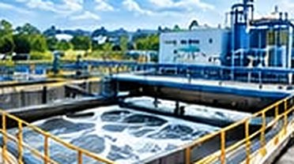
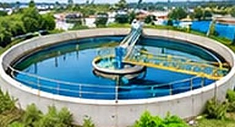
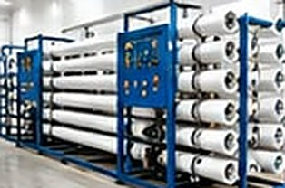
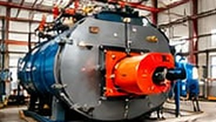
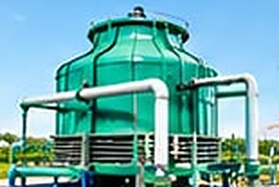
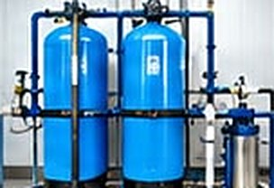
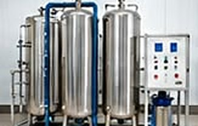
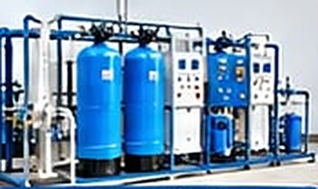

Plant Division
About us, our plant range, quality focus and mission.
About Aqua Chem Labs
Aqua Chem Labs is a team of dedicated, result-oriented professionals with rich experience in the water treatment industry. Our expertise covers Design & Engineering, Marketing, Project Execution and complete turnkey solutions.
We specialize in manufacturing, operations, erection & maintenance of
- STP & ETP Systems
- Reverse Osmosis Plants
- Softener Plants
- De-ionization Systems
- Cooling Tower Treatment
- De-mineralization Plants
- Zero Liquid Discharge Plants
- Boiler Water Treatment System
- Filtration Systems of all capacities
Our plants & systems








Our focus
- Constantly improving our products & services
- Meeting ever-changing customer needs
- Delivering long-term satisfaction through quality and trust
Our quality policy ensures
- Consistent performance
- Dependable service
- Prompt response to customer requirements
Our Mission: To provide smart, sustainable, and efficient water treatment solutions that exceed customer expectations.
How a project runs
Understand your water
We analyze raw water parameters, loading, metallurgy, and required treated quality.
Design the system
Our engineers calculate plant sizing, recovery rates, and optimal dosing programs.
Build and commission
Complete turnkey erection, piping, control panel integration, and commissioning.
Operate and maintain
Regular AMC, routine testing, chemical dosing calibration, and genuine spares supply.